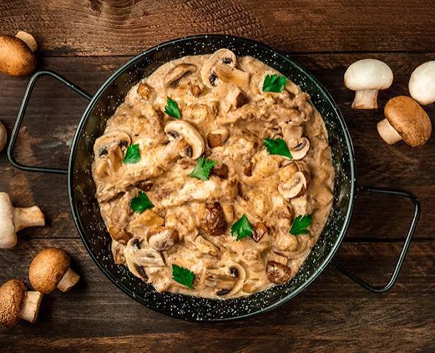

Página inicial
Strogonoff com Cogumelos

Receita simples para preparar Stronoff com cogumelos!
Ingredientes principais: frango, cogumelo e creme de leite
Ingredientes
- 1 kg de filé de peito de frango
- Azeite de oliva
- 1 cebola picada
- 3 dentes de alho picados
- 200 g de cogumelo paris fatiado
- ¼ xícara de conhaque
- Sal a gosto
- Pimenta-do-reino a gosto
- 1 colher de chá de páprica picante
- 1 colher de sopa de mostarda amarela
- 1 colher de sopa de mostarda dijon
- 2 colheres de sopa de molho inglês
- ¼ de xícara de molho de tomate
- 500 ml de creme de leite fresco
- Salsinha a gosto
Modo de Preparo
- Descongelar 1kg de filé de peito de frango.
- Cortar o frango em tirinhas.
- Em uma panela quente, dispor um fio de azeite e
dourar as tiras de frango de todos os lados. Reservar.
- Na mesma panela, dispor mais um fio de azeite e
refogar a cebola por 3 minutos.
- Acrescentar o alho e refogar por mais um minuto.
- Adicionar o cogumelo e refogar até que comece a murchar.
- Retornar o frango para a panela e flambar tudo com o conhaque.
- Quando o álcool evaporar, temperar com o sal, a páprica,
as mostardas e o molho inglês.
- Acrescentar o extrato de tomate e misturar bem.
- Dispor o creme de leite e cozinhar por mais 5 minutos,
para apurar o sabor.
- Finalizar com salsinha.
- Servir com arroz e batata palha.